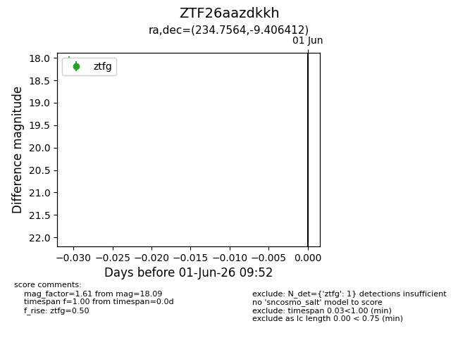
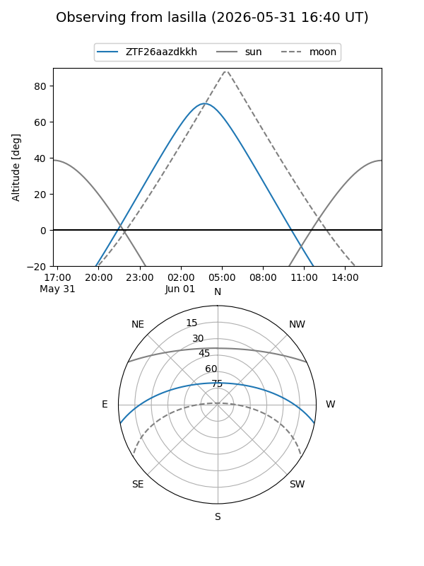
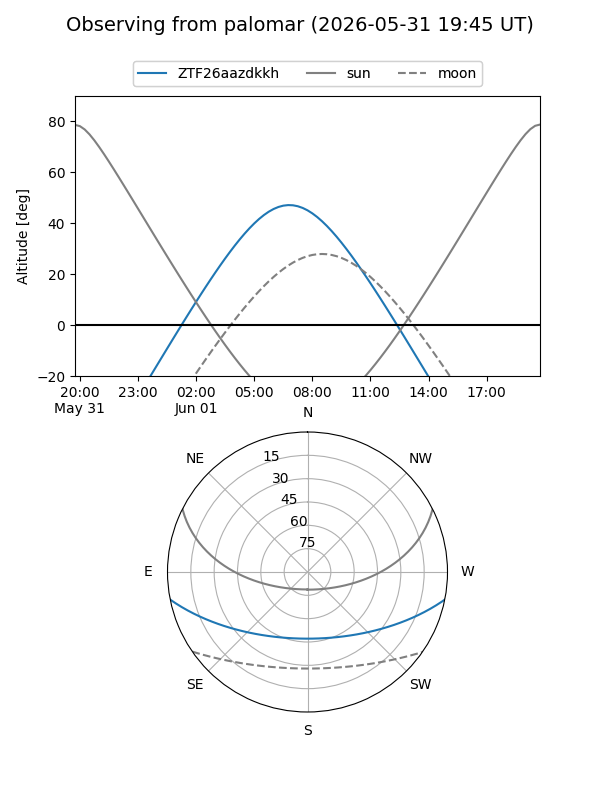

ZTF26aazdkkh
Target ZTF26aazdkkh at 2026-06-01 09:53
Aliases and brokers:
lsst-FINK: link
lsst-Lasair: link
lsst-ALeRCE: link
ztf-FINK: link
ztf-Lasair: link
ztf-ALeRCE: link
alt names
ZTF26aazdkkh (ztf,fink_ztf)
Coordinates:
equatorial (ra, dec) = 234.7564,-9.40641
equatorial (HMS+DMS) = 15:39:01.53,-09:24:23.08
galactic (l, b) = (356.8383,+35.38224)
Flags:
Photometry:
last ztfg=18.09
1 ztfg detections
Lightcurve

Visibility


Additional plots